MY WORK

Personal Case Study
Teacher Hiring and Upskilling Platform
A case study to find a snag in existing hiring process of teachers in India and to provide with a possible effective solution.
Feb 2023

Xane AI
AI-driven Automobile/Appliances Platform
One of the recent project where got the opportunity to redesign website experience for an ai-backed appliances' related solution provider technology platform.
Oct 2024 - Jan 2025

Nagrik
Political Media Application
Focus was to create a user-friendly interface for citizens to explore the list of candidates and there profile in respective constituencies. Further explorations on idea of map view and polls were performed.
Feb 2024 - May 2024

upsurge
Kids' Based Edutainment Platform
With user-centered approach, the goal was to redesign the website and app experience. Collaborate with different teams to create user friendly kids' based financial edtech.
May 2023 - Dec 2023